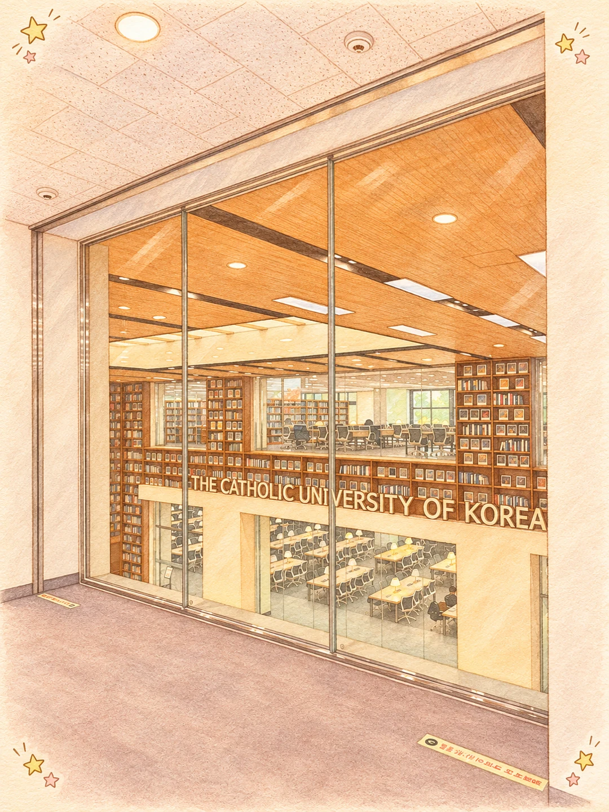

MY STORY
이곳이 내게 갖는 의미
저에게 도서관은 단순히 책을 읽거나 공부하는 곳이 아니라, 잠시 속도를 늦추고 여유를 가질 수 있는 공간에 더 가깝습니다. 이곳에서는 바깥세상의 번잡함에서 잠시 벗어나 평온한 가운데 생각하고 공부할 수 있습니다.
이곳에서 해 보고 싶은 일
- 좋아하는 책과 함께 조용히 공부하기
- 봄에는 벚꽃, 겨울에는 눈 덮인 풍경 감상하기
함께 찾아가 볼까요?
캠퍼스 지도로 주변을 살펴보거나, Naver 지도에서 위치를 확인할 수 있어요.